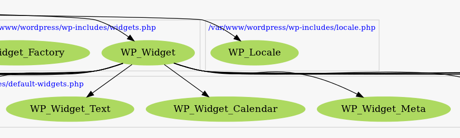
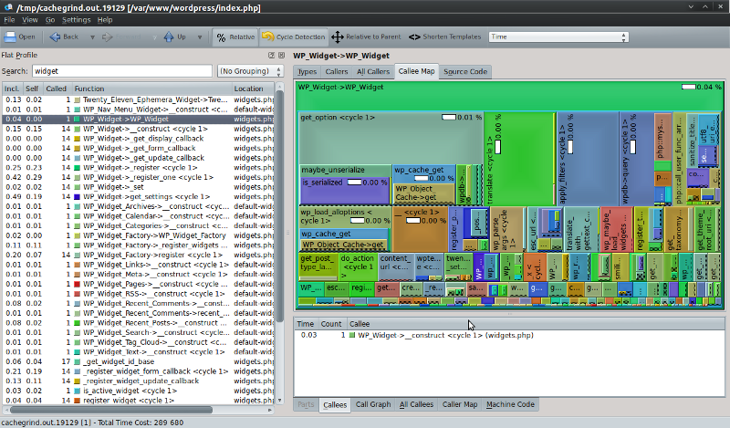
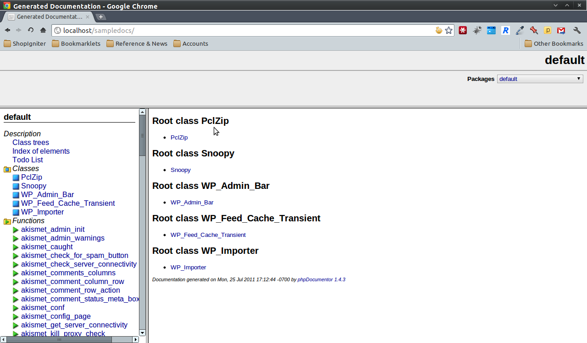

Tools for Spelunking a New-to-You Codebase
Christie Koehler
OSCON 2011 — Portland, Oregon
christiekoehler@gmail.com
@christiekoehler
“How you do learn a new-to-you codebase?”
Some useful tools:
- phpinclued
- xdebug
- phploc
- phpdocumentor
- PHP_CodeSniffer
- Reflection Class
phpinclued
phpinclued helps you analyze your project’s structure (includes or classes).
- Yes, that’s the correct spelling.
- Available via pecl.
- Use with Graphiz to create visualizations.
To install:
$ sudo pecl install channel://pecl.php.net/inclued-0.1.2
phpinclued
If successful, you should see something like:
Build process completed successfully Installing '/usr/lib/php5/20090626/inclued.so' install ok: channel://pecl.php.net/inclued-0.1.2 configuration option "php_ini" is not set to php.ini location You should add "extension=inclued.so" to php.ini
edit your php.ini (or create a /conf.d/inclued.ini)
extension=inclued.so inclued.enabled=on inclued.dumpdir=/tmp/
Don’t forget to turn this off when you’re done (/tmp will fill up quickly!)
phpinclued usage
<?php
$path = ini_get('inclued.dumpdir');
$filename = isset($argv[1]) ? $argv[1] : false;
if($path && is_dir($path) && is_file($path.$filename)) {
$data = file_get_contents($path.$filename);
$inclued = unserialize($data);
$keys = array_keys($inclued);
print_r($keys);
echo PHP_EOL;
print_r($inclued['classes']);
echo PHP_EOL;
}
?>
phpinclued results
[62] => Array
(
[name] => WP_Widget_Text
[mangled_name] => wp_widget_text
[filename] => /var/www/wordpress/wp-includes/default-widgets.php
[line] => 368
[parent] => Array
(
[name] => WP_Widget
[filename] => /var/www/wordpress/wp-includes/widgets.php
[line] => 24
)
)
phpinclued & graphiz
Make sure you have graphiz installed:
sudo aptitude install graphviz
Run gengraph.php (comes with inclued):
php /usr/share/php/gengraph.php -i /tmp/inclued.29752.4
Then use graphiz to create the graphic:
dot -Tsvg -o wordpress.svg inclued.out.dot
phpinclued & graphviz results

xdebug profiling
xdebug is a profiler and debugger for php
install it via pecl:
$ sudo pecl install xdebug
if successful, you will see:
Build process completed successfully Installing '/usr/lib/php5/20090626/xdebug.so' install ok: channel://pecl.php.net/xdebug-2.1.1 configuration option "php_ini" is not set to php.ini location You should add "extension=xdebug.so" to php.ini
xdebug (configuration)
edit your php.ini:
zend_extension=/usr/lib/php5/20090626/xdebug.so ; enable by default xdebug.default_enable = 1 ; disable @ error suppression xdebug.scream = 1
xdebug useful methods
Includes function to determine calling class, function, file and line, respectively:
- xdebug_call_class()
- xdebug_call_function()
- xdebug_call_file()
- xdebug_call_line()
A bit easier to user than debug_backtrace().
Other useful functions like xdebug_memory_usage, xdebug_peak_memory_usage, xdebug_get_headers.
xdebug profiling
Useful for identifying bottlenecks and learning how your code is run.
Outputs a cachegrind compatible file, which can be analyzed with:
- KCacheGrind,
- xdebugtoolkit:
- webgrind
Enable by adding the following to php.ini:
xdebug.profiler_enable = 1 xdebug.profiler_output_dir = /tmp ; (default) xdebug.profiler_output_name = cachegrind.out.%p ; (default)
xdebug profiling
cachegrind.out data can be analyzed with kcachegrind:

phploc (lines of code)
Allows you to give you a quick overview of a project’s size
https://github.com/sebastianbergmann/phploc/
Install through PEAR:
sudo pear channel-discover pear.phpunit.de sudo pear channel-discover components.ez.no sudo pear install phpunit/phploc
Usage:
phploc --count-tests /var/www/ThinkUp/
phploc results
results:
phploc 1.6.1 by Sebastian Bergmann.
Directories: 65
Files: 588
Lines of Code (LOC): 114978
Cyclomatic Complexity / Lines of Code: 0.07
Comment Lines of Code (CLOC): 38921
Non-Comment Lines of Code (NCLOC): 76057
Namespaces: 6
Interfaces: 48
Classes: 640
Abstract: 23 (3.59%)
Concrete: 617 (96.41%)
Average Class Length (NCLOC): 116
Methods: 3442
Scope:
Non-Static: 3215 (93.40%)
Static: 227 (6.60%)
Visibility:
Public: 2776 (80.65%)
Non-Public: 666 (19.35%)
Average Method Length (NCLOC): 21
Cyclomatic Complexity / Number of Methods: 2.35
Anonymous Functions: 95
Functions: 108
Constants: 175
Global constants: 37
Class constants: 138
Tests:
Classes: 281
Methods: 1855
PHP_CodeSniffer
Analyzes code for adherence to different coding standards. p. Standards installed by default: PEAR, PHPCS, Squiz, MySource and Zend. p. You can create your own coding standards or “sniffs”. p. Can be used in conjunction with pre-commit hooks.
Install via PEAR:
sudo pear install PHP_CodeSniffer
Usage:
phpcs -vpn --standard=PEAR /var/www/geeklog/
Switches: verbose, no warnigs, show progress.
PHP_CodeSniffer (results)
Registering sniffs in PEAR standard... DONE (26 sniffs registered)
Creating file list... DONE (1 files in queue)
Processing calendar.class.php [2656 tokens in 535 lines]... DONE in < 1 second (75 errors, 0 warnings)
FILE: /var/www/geeklog-1.8.0/system/classes/calendar.class.php
--------------------------------------------------------------------------------
FOUND 75 ERROR(S) AFFECTING 33 LINE(S)
--------------------------------------------------------------------------------
2 | ERROR | You must use "/**" style comments for a file comment
49 | ERROR | Missing @category tag in class comment
49 | ERROR | Missing @package tag in class comment
49 | ERROR | Missing @author tag in class comment
49 | ERROR | Missing @license tag in class comment
49 | ERROR | Missing @link tag in class comment
50 | ERROR | Opening brace of a class must be on the line after the
| | definition
104 | ERROR | Missing class doc comment
104 | ERROR | Opening brace of a class must be on the line after the
| | definition
172 | ERROR | Expected 1 space before variable type
172 | ERROR | Expected 1 space after the longest type
173 | ERROR | Expected 1 space before variable type
173 | ERROR | Expected 1 space after the longest variable name
174 | ERROR | Last parameter comment requires a blank newline after it
174 | ERROR | Expected 1 space before variable type
184 | ERROR | No space found after comma in function call
184 | ERROR | No space found after comma in function call
184 | ERROR | No space found after comma in function call
184 | ERROR | No space found after comma in function call
184 | ERROR | No space found after comma in function call
195 | ERROR | Expected 1 space before variable type
195 | ERROR | Expected 1 space after the longest type
196 | ERROR | Expected 1 space before variable type
196 | ERROR | Expected 1 space after the longest variable name
197 | ERROR | Last parameter comment requires a blank newline after it
197 | ERROR | Expected 1 space before variable type
207 | ERROR | No space found after comma in function call
207 | ERROR | No space found after comma in function call
218 | ERROR | Last parameter comment requires a blank newline after it
218 | ERROR | Expected 1 space before variable type
218 | ERROR | Expected 1 space after the longest type
218 | ERROR | Expected 1 space after the longest variable name
247 | ERROR | Expected 1 space before variable type
247 | ERROR | Expected 1 space after the longest type
247 | ERROR | Expected 1 space after the longest variable name
248 | ERROR | Last parameter comment requires a blank newline after it
248 | ERROR | Expected 1 space before variable type
310 | ERROR | Last parameter comment requires a blank newline after it
310 | ERROR | Expected 1 space before variable type
310 | ERROR | Expected 1 space after the longest type
310 | ERROR | Expected 1 space after the longest variable name
314 | ERROR | Opening brace should be on a new line
355 | ERROR | Last parameter comment requires a blank newline after it
355 | ERROR | Expected 1 space before variable type
355 | ERROR | Expected 1 space after the longest type
355 | ERROR | Expected 1 space after the longest variable name
361 | ERROR | Line indented incorrectly; expected at least 8 spaces, found 4
413 | ERROR | Last parameter comment requires a blank newline after it
413 | ERROR | Expected 1 space before variable type
413 | ERROR | Expected 1 space after the longest type
413 | ERROR | Expected 1 space after the longest variable name
415 | ERROR | Missing @return tag in function comment
428 | ERROR | Expected 1 space before variable type
428 | ERROR | Expected 1 space after the longest type
429 | ERROR | Last parameter comment requires a blank newline after it
429 | ERROR | Expected 1 space before variable type
429 | ERROR | Expected 1 space after the longest variable name
429 | ERROR | Doc comment for "$week_start" missing
431 | ERROR | Missing @return tag in function comment
472 | ERROR | Expected 1 space before variable type
473 | ERROR | Expected 1 space before variable type
474 | ERROR | Last parameter comment requires a blank newline after it
474 | ERROR | Expected 1 space before variable type
474 | ERROR | Expected 1 space after the longest type
474 | ERROR | Expected 1 space after the longest variable name
476 | ERROR | Missing @return tag in function comment
479 | ERROR | No space found after comma in function call
479 | ERROR | No space found after comma in function call
499 | ERROR | No space found after comma in function call
520 | ERROR | Expected 1 space before variable type
520 | ERROR | Expected 1 space after the longest type
521 | ERROR | Last parameter comment requires a blank newline after it
521 | ERROR | Expected 1 space before variable type
521 | ERROR | Expected 1 space after the longest variable name
525 | ERROR | Opening brace should be on a new line
--------------------------------------------------------------------------------
Time: 0 seconds, Memory: 11.00Mb
phpdocumentor
auto-generate documentation from your code
sudo pear install --alldeps pear/PhpDocumentor
usage:
phpdoc -o HTML:frames:earthli -d /var/www/wordpress/ -t sampledocs
phpdocumentor results

Reflection API
Allows you to reverse-engineer classes, interfaces, functions, methods and extensions. p. Can also retrieve docblock comments for functions, classes and methods. p. Par of PHP core as of 5.
Reflection API Usage
comman-line usage:
--rf <name> Show information about function <name>. --rc <name> Show information about class <name>. --re <name> Show information about extension <name>. --ri <name> Show configuration for extension <name>.
example with php -rf array_keys:
Function [ <internal:standard> function array_keys ] {
- Parameters [3] {
Parameter #0 [ <required> $arg ]
Parameter #1 [ <optional> $search_value ]
Parameter #2 [ <optional> $strict ]
}
}
Relection API Usage
<?php
include('/var/www/wordpress/wp-includes/widgets.php');
$reflector = new ReflectionClass('WP_Widget');
$methods = $reflector->getMethods();
foreach($methods as $method) {
$method_names[] = $method->name;
}
echo "Methods: " . implode(', ', $method_names);
echo PHP_EOL . PHP_EOL;
$properties = $reflector->getProperties();
foreach($properties as $property) {
$property_names[] = $property->name;
}
echo "Properties: " . implode(', ', $property_names);
echo PHP_EOL . PHP_EOL;
$parent = $reflector->getParentClass();
if(is_object($parent)) {
echo "Parent Class: " . $parent->getName();
}
else {
echo $reflector->getName() . " has no parent.";
}
echo PHP_EOL . PHP_EOL;
echo "Doc Comment: " . PHP_EOL . $reflector->getDocComment() . PHP_EOL;
?>
Relection API Usage
Methods: widget, update, form, WP_Widget, __construct, get_field_name, get_field_id, _register, _set, _get_display_callback, _get_update_callback, _get_form_callback, display_callback, update_callback, form_callback, _register_one, save_settings, get_settings Properties: id_base, name, widget_options, control_options, number, id, updated WP_Widget has no parent. Doc Comment: /** * This class must be extended for each widget and WP_Widget::widget(), WP_Widget::update() * and WP_Widget::form() need to be over-ridden. * * @package WordPress * @subpackage Widgets * @since 2.8 */
Other tools to consider
phpdepend:
p. php mess detector: